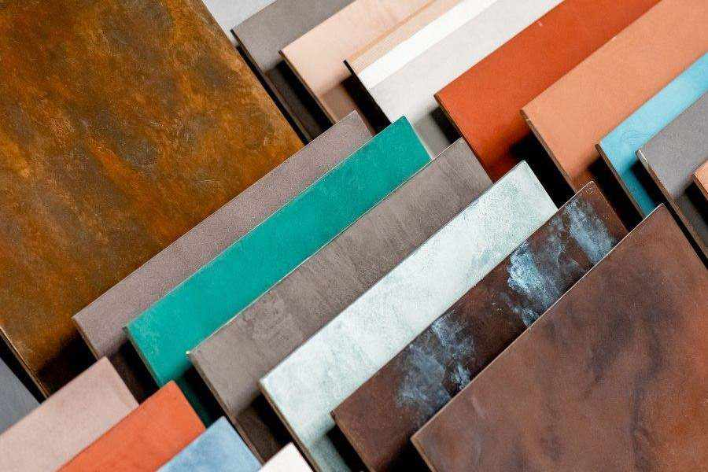

De quoi s’agit-il ?
Le béton ciré Topciment est un revêtement decoratif composé à base de ciment , de résine base eau , d'additifs et de pigmets minéraux
C'est un matériau aussi bien pour l'extérieur que pour l'intérieur. Applicable sur les sols , murs et plafonds... Et son atout majeur c'est qu'il n'a pas besoin de joints! Ainsi son nettoyage et sa maintenance sont facilités.
Topciment vous offre un vaste éventail de possibilités et de finitions, où la limite est la vôtre. Imprimez à vos pièces un caractère unique et personnel,grâce aux différentes textures (épaisse, moyenne ou fine), à la grande variété de couleurs aux différentes finitions de vernis (mate, satinée ou brillante) ou aux peintures et glacis aux effets métalliques. Son application de manière artisanale fait que le résultat de chaque travail soit encore plus unique et exclusif… Sans égal, car vous ne trouverez pas deux surfaces identiques.

Imaginez et innovez. Quelconque combination est possible avec Topciment!
Donnez le style que vous voulez: moderne , classique ou rustique.
Le plaisir est à vous . Et le notre de vous conseillez et de vous aider.

Oubliez les travaux compliqués. Economisez temps et argent. En raison de sa haute adhérence , le
béton ciré Topciment peut être appliquer sur quelconque superficie, même sur le
carrelage.Avec très peu de travaux et une épaisseur d’à peine 3 millimètres, vous
obtiendrez une rapide rénovation des espaces.